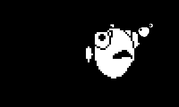
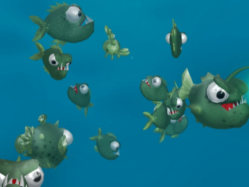

Introduction
Aquar.io is the highly anticipated sequel to Oceanar.io, offering a fascinating multiplayer underwater ecosystem where you start as a small Queen fish and build a massive school. What makes Aquar.io truly unique is its dual-threat gameplay: you must feed your school to grow, but you can also sacrifice your own fish to gain experience and evolve your Queen fish through five distinct evolutionary stages. Players love the game for its addictive progression, strategic depth, and the constant tension of protecting your vulnerable Queen while navigating a hostile ocean filled with rival players and unpredictable marine life. It perfectly blends io-style fast-paced action with deep, rewarding evolution mechanics, ensuring every match feels like a thrilling underwater adventure.
Getting Started

To begin your aquatic journey in Aquar.io, you spawn as a small Queen fish. Your primary objective is to direct your Queen using your mouse pointer while growing your school by consuming smaller ocean dwellers and food. The core controls are simple but vital: hold the left mouse button or the W key to send your school into battle to attack enemies. Hold the right mouse button or Space for a short time to merge your fish, making them significantly stronger in combat. Crucially, holding the right mouse button or Space for a longer period allows you to devour your own school members, granting your Queen fish the experience needed to evolve. You can also use your mouse scroll wheel to zoom in and out, which is essential for situational awareness as your school expands. Remember, your Queen fish is your lifeline; if it dies, the game ends immediately, so always prioritize its safety while expanding your aquatic empire.
Basic Tips
1. Protect the Queen at all costs: Your Queen fish is your anchor. If it dies, you lose. Always keep a buffer of regular fish between your Queen and hostile enemies. 2. Merge before engaging: Never attack a larger school head-on without merging. Holding the right mouse button briefly merges your fish into a denser, much stronger formation, increasing your damage output significantly. 3. Feed efficiently to grow: Focus on smaller, neutral ocean dwellers and scattered food to safely build your school size before challenging other players. 4. Devour strategically for evolution: Do not just hoard your fish. If you are safe, devour your own school members to quickly gain the experience required to unlock your Queen's next evolutionary level and its special abilities. 5. Manage your zoom: As your school grows, the game auto-zooms out. Manually zoom in with your scroll wheel when navigating tight spaces or targeting specific small fish to maintain precise control over your Queen's movement.
Advanced Strategies
1. Bait and Switch: Use a small group of your fish to bait an aggressive opponent into attacking, then quickly merge your main school to crush them while they are overextended. 2. Evolution Timing: Save your devouring for critical moments. Evolving your Queen through the five levels unlocks powerful special abilities. Time your evolution when you are near a safe zone or have a massive food source to exploit the new ability immediately. 3. Flanking Maneuvers: Since you control the Queen with your mouse, use the edge of the screen to your advantage. Move your Queen to the periphery to force enemies to turn, exposing their flanks to your merged school. 4. School Color Coordination: Use the arrow buttons on the sides of the logo to change your school colors. This is not just cosmetic; it can help you visually track your merged versus unmerged groups during chaotic multiplayer skirmishes, ensuring you do not accidentally devour the wrong fish.
Pro Tips

1. Micro-Manage the Queen: Top players keep the Queen moving in unpredictable, erratic patterns rather than straight lines, making it incredibly difficult for enemies to target the core while your merged school does the heavy lifting. 2. Spectate to Learn: Use the Spectate mode and WASD camera controls to watch the Top 1000 players. Study how they position their Queen relative to their school during intense encounters. 3. Server Selection: While the nearest server is chosen automatically, manually select less populated servers if you want to focus purely on evolving without constant interruptions, or pick highly populated ones to dominate the leaderboards.
Conclusion
Aquar.io offers a brilliantly unique twist on the io game formula by combining school-building mechanics with deep evolutionary progression. By mastering the balance between protecting your Queen, merging for combat, and devouring for XP, you can conquer the deep. Jump in, customize your school's colors, and see if you have what it takes to reach the Top 1000 leaderboard. Good luck, and may your Queen rule the ocean!